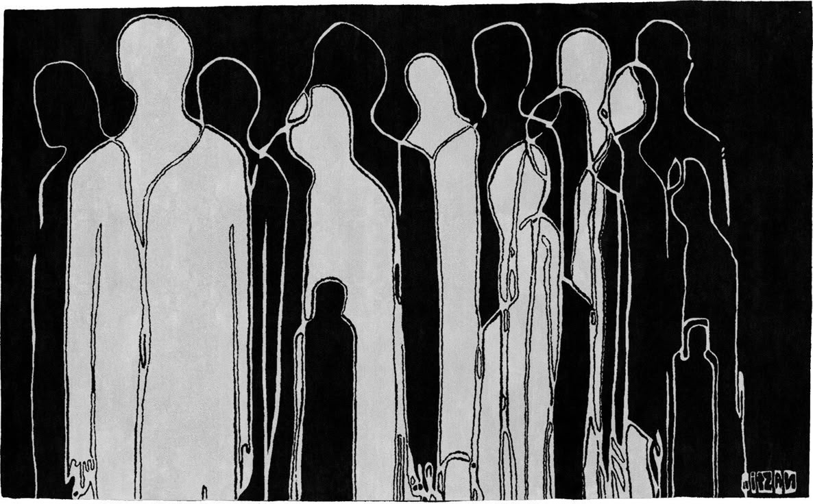

Backlog
Ideas, projects, and skills on the horizon.
Project Ideas
• Omegle for founders to connect with potential cofounders. Users submit to join the platform and are approved.
• Web App that converts customer feedback into actionable items and product features.
• Mobile App or Chrome Extension that automatically turns a screenshot of a flyer into a calendar invite.
• Mobile app that gamifies habit tracking and helps with accountability/discipline.
Skills to Learn in 2026
• Advanced TypeScript patterns and type systems
• System design and scalable architecture
• AI integration in web applications
• Mobile app development with Flutter
Essays to Write
• The vibe coding learning curve
• What I have learned as a prompt engineer
• The importance of shipping ugly first versions
• The challenges of being a self taught developer
Things to Explore
• AI-assisted development workflows
• New programming languages and paradigms
• Machine learning fundamentals
• Building a neural network from scratch
• AI trading bots for algorithmic trading